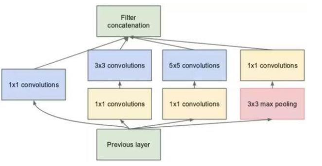
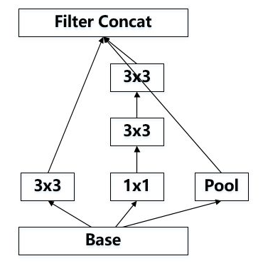
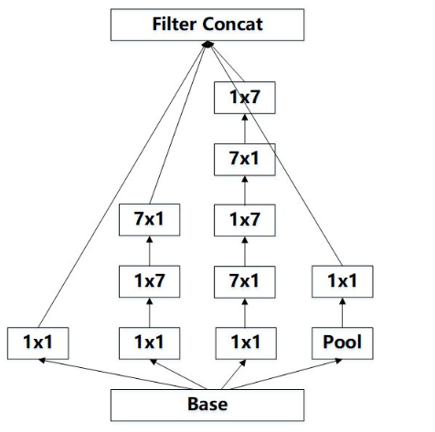
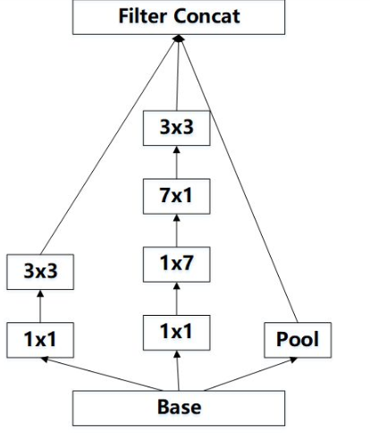
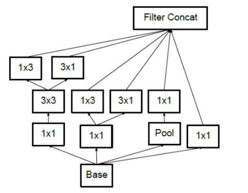
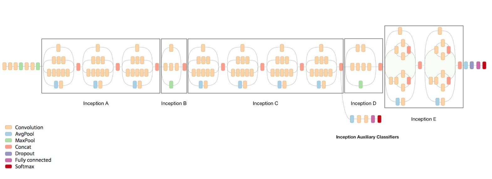

学习笔记-GoogLeNet_CIFAR10
对于PyTorch的学习，基于Colab平台，主要内容来自于OUCTheoryGroup
定义 dataloader
1 | import torch |
定义 InceptionV3 网络
1 | class BasicConv2d(nn.Module): |
inception模块
- 初衷：多卷积核增加特征多样性
- 不同的卷积核操作之后，会有不同的channel和feature map大小，然后进行padding操作，再将多个卷积核的操作结构进行串联即可
- 可以看以下之前的学习笔记
Inception A 模块

该结构将CNN中常用的卷积（1x1，3x3，5x5）堆叠在一起（卷积后的尺寸相同，将通道相加），一方面增加了网络的宽度，另一方面也增加了网络对尺度的适应性
其中pooling层的作用主要是起到一个连接前后两层的目的，使得两层的feature map数量相同。
得到的特征图数量一共是：64 + 64 + 96 + pool_features = 224 + pool_features
1 | class InceptionA(nn.Module): |
Inception B 模块

其作用是让图像的尺寸变小。可以从代码中看出在卷积层中的步长设置为了2，所以会使得feature map的尺寸变小1/2 。
输出的 feature map 数量是 384 + 96 + in_channels = 480 + in_channels
1 | class InceptionB(nn.Module): |
Inception C 模块

任意nxn的卷积都可以通过1xn卷积后接nx1卷积来替代（可以降低计算量）
GoogLeNet团队发现在网络的前期使用这种分解效果并不好，在中度大小的特征图（feature map）上使用效果才会更好（特征图大小建议在12到20之间）
图像的大小不会发生变化，四个分支得到的 feature map 数量都是192，因此，经过这个模块，feature map 的数量是 192 * 4 = 768
1 | class InceptionC(nn.Module): |
Inception D 模块

和上面理解基本一致，步长为2，导致图片尺寸缩小1/2，feature map大小为320 + 192 + in_channels = 512 + in_channels
1 | class InceptionD(nn.Module): |
Inception E 模块

feature map大小为320 + 768 + 768 + 192 + in_channels = 2048 + in_channels
1 | class InceptionE(nn.Module): |
整体架构

简化结构如下：
1 | class Inception3(nn.Module): |
网络初始化
1 | # 网络放到GPU上 |
训练网络
下面训练网络和测试网络的代码和之前基本一致
1 | for epoch in range(10): # 重复多轮训练 |
测试验证准确率
1 | correct = 0 |